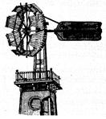
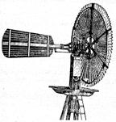
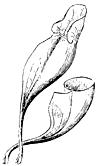
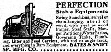

This page contains excerpts from issues of The American Agriculturist dated 1883.
Some Improved Windmills, or Wind Engines.
In the March number of the American Agriculturist pages 98-99, we discussed the value of tile force of the wind as utilized by the Windmill or Wind engine. At the same time a number of standard mills were presented, and their differences to scale extent pointed out. These did not include all the first-class mills; in fact, we did not even mention the "Halladay" Mill, made by the U. S. Wind Engine and Pump Co., Batavia, III., one of the pioneers, as many of our readers know, in the field of improved Windmills in this country. In the present article, without setting forth the importance of windmills in general-as that was given at some length last March-we simply wish to and to the list then commenced, some of the mills that have since come before our notice. The stain feature in the "Halladay" Windmill is the arrangement of the regulating gear by a sliding head, so that when the velocity increases the sails present less surface to the wind. The speed of the wind-wheel is dependent on the velocity of the wind, and the angle at which it strikes the sails. In the "Halladay" the exposed surface is diminished without changing the angle, thus keeping the pressure of the wind equally distributed on all sides of the wind-wheel, avoiding strain, and at the same time time being self-regulating.
Figure 1 shows this mill in position when at rest. When the sails are fully spread they take a radial position somewhat as in the wind-wheel shown in figure 2-that of the Eureka Mill, manufactured by the Kewanee Mfg. Co., New York City. This is a "solid wheel" mill, and, like all of its class, has certain points in its favor. It is claimed that ice and sleet do not interfere with their work as much as with the movable mills, which sometimes must be cleaned before they will start. It is a self-regulating mill, and simple in its construction.
The "Champion " Wind-engine is shown in figure 3. The same company, Powell & Douglas, Waukegan III., make an Iron Screw Windmill; it has a twisted sail, and works on the same principle as a propeller wheel, in fact, is the "Champion," with corrugated iron instead of wooden slat fans. These mills are self-regulating, and can be set by the governing weight to run at any desired speed. An all iron mill is shown in figure 4-the "Iron Duke," made by O. S. Gilbert & Co., Indianapolis, Ind. This is a self-regulating mill and, for the power it gives, is light, strong, and durable. Each of the units mentioned has special points of its own, which are set forth at length in the circulars and pamphlets of tile several companies, and with the light which these will give, upon the subject, those desiring mills are enabled to decide which mects their wants tile most fully. The U. S. Windmill Co., for example, makes 17 sizes, ranging all the way from that of one-man power, alt to those of 45 horse-power, employed by railroads, etc.
Large and small are indefinite terms, and even " mammoth " does not convey a clear idea of the size of alt object, even if it is an " outfit." As the " outfit" is bent by mail, we are sure that it does not weigh over four pounds. In this case a "mammoth" is under 64 ounces. "Outfit" for what? That is a secret. To find that out one must send twenty-five cents to Smith & Co. This circular of S. & Co. is very funny reading. It claims that every agent will make "a dollar every hour that he works at the business," The principal part of both sides of the circular, and a large one it is, is filled with items most ingeniously calculated to excite curiosity, and we have no doubt that remittances come in abundantly to Smith & Co. This circular is an interesting addition to the literature of the " Variety Business."
|
 Fig. 1.- THE "" HALLADAY "" MILL AT REST. |
 Fig. 2. ? THE ""EUREKA"" WINDMILL |
LEAVES OF HONEYSUCKLE |
|
 LEAVES OF PITCHER PLANT |
 |
|